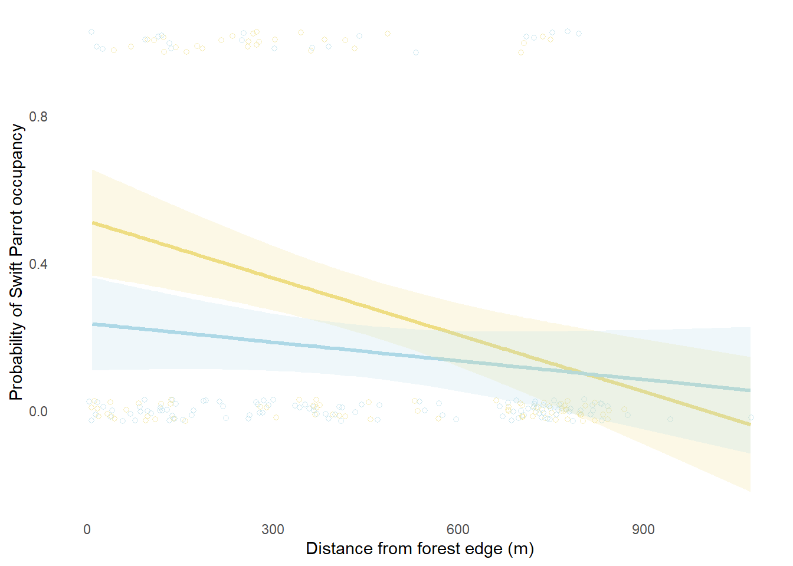

knitr::opts_chunk$set(
echo = TRUE)
library(tidyverse)
library(here)
library(gt)
library(flextable)
library(janitor)
library(readxl)
library(dplyr)
library(ggplot2)
library(lubridate)
library(ggeffects)
library(scales)
library(DHARMa)
library(MuMIn)Env S 193DS Final
Nathan Seaway
June 11, 2025
https://github.com/nathanseaway/ENVS-193DS_spring-2025_final.git
1.Research writing
a.
In part 1, they used a pearson’s r, and in part 2 they used an analysis of variance.
b.
Two additional pieces of information that would be good to include are effect size and alpha value.
An effect size for an ANOVA is given by the symbol η². It is a measure of the size of the effect of the groups on the response variables. For these results an effect size would tell us how large a difference between locations in terms of average nitrogen load.
An alpha value (α) indicates the threshold for statistical significance used to determine rejecting the null hypothesis. In the current answer no threshold value was given and so it appears no criteria of significance was used in determining the rejection of the null hypothesis. For example saying an α of .05 was used would make the p value of .02 statistically signifcant as the p value is less than the alpha.
c.
There is a (strong/weak) relationship between distance from headwater (km) and annual total nitrogen load (kg year-1) (Pearson’s r= correlation coefficient) (Pearson’s product moment correlation, t(df)= t-statistic, p=0.03, α= alpha value).
On average, distance from headwater (strongly/weakly) predicted annual total nitrogen load (sample estimate=pearson’s correlation, 95% CI: [upper, lower]).
We found a (large/small) difference (η²= effect size) between locations in average nitrogen load (kg year-1) (one way ANOVA, F(among groups df, within groups df)= F-statistic, p=0.02, α= alpha value.
On average, (location) tend to have (larger/smaller) average nitrogen loads than (other location) (amount difference in kg year-1, 95% CI: [upper, lower kg/yr ) and (other location) (amount difference in kg year-1, 95% CI: [upper, lower kg/yr ).
2.Data visualization
sst <- read.csv("../data/SST.csv") #reads csv files a.
sst_clean <- sst |> #creates new data frame calles sst_clean
mutate(
year = year(date),
month = factor(month(date, label = TRUE, abbr = TRUE),
levels = month.abb, ordered = TRUE)) |> #makes new year and month columns with month as a factor whose labels appear and are ordered
filter(year >= 2018 & year <= 2023)|>
mutate(year = fct_relevel(as.factor(year),
"2018", "2019", "2020", "2021", "2022", "2023")) |> #filters data set to only include the years 2018-2023
group_by(year, month)|> #groups data by year and month
summarize(
mean_monthly_sst = mean(temp,na.rm = TRUE),.groups = "drop") #summarizes the data by mean of temperature and degroups after summary
slice_sample(sst_clean, n = 5) #gives us 5 examples of new output# A tibble: 5 × 3
year month mean_monthly_sst
<fct> <ord> <dbl>
1 2018 Sep 18.2
2 2018 Jul 18.2
3 2020 Sep 18.7
4 2023 Jul 16.3
5 2022 Apr 13.3str(sst_clean) #shows data frametibble [72 × 3] (S3: tbl_df/tbl/data.frame)
$ year : Factor w/ 6 levels "2018","2019",..: 1 1 1 1 1 1 1 1 1 1 ...
$ month : Ord.factor w/ 12 levels "Jan"<"Feb"<"Mar"<..: 1 2 3 4 5 6 7 8 9 10 ...
$ mean_monthly_sst: num [1:72] 15 14.3 13.5 12.8 13.6 ...b.
ggplot(sst_clean, aes(x=month,
y= mean_monthly_sst,
group = year,
color= year))+ #creates plot with sst_clean data frame month vs mean sst by year
geom_line(size=.75) + #adds lines to connect points
geom_point(size=2)+ #adds points to represent data points
scale_color_manual(
values=c(
"2018" = "#d9f0d3",
"2019" = "#a6dba0",
"2020" = "#5aae61",
"2021" = "#1b7837",
"2022" = "#006837",
"2023" = "#004529"
) #adds colors for each year
)+
labs(
x= "Month",
y= "Mean monthly sea surface temperature (°C)",
color = "Year"
)+ #makes labels for axis
theme_minimal()+ #sets theme as minimal
theme(
legend.position = c(0.1, 0.8), #puts the legend at those coordinates
panel.border = element_rect(color = "gray", fill = NA, size = 1),#sets pannel boarders that color
panel.background = element_rect(fill = "white", color = NA), #sets panel background white
plot.background = element_rect(fill = "white", color = NA), #sets plot background as white
panel.grid.minor = element_blank(), #removes grid lines
panel.grid.major = element_blank() #removes grid lines
) #sets the theme: colors of background and boarders and removes grid lines3.Data analysis
a.
The 1s and 0s refer to the binary response variable of either the boxes being designated that value: swift parrot, common starling, empty, or tree martin or not having that variable. So for each observation one of those variables is a 1 and the other are 0.
b.
In terms of this study, swift parrots are the species of interest who represent the group the authors are interested in gaining insight into how to best build boxes that will help conserve the species. The other two species represent competition with the swift parrot and are species whose usage of the boxes is to the disadvantage of the endangered swift parrot.
c.
The two seasons in the study are the breeding seasons of November and December in 2016/2017 and 2019/2020. They differ by the establishment of the bird boxes: 2016 the boxes were new whereas in 2019 the boxes were “established” this allowed researchers to compare between nesting habitants in new vs established bird boxes.
d.
nest_boxes <- read.csv("../data/nest_boxes.csv") # reads this file
nest_boxes_clean <- nest_boxes |> #creates new file from nextboxes
clean_names()|> #cleans names
rename_with(~ str_replace_all(., " ", "_"))|> #replaces . with _ in names in file
mutate(season = as.factor(season)) # makes season a factor in the code | Model number | Season | Edge distance | Model description |
|---|---|---|---|
| 0 | Null model | ||
| 1 | X | X | Saturated model: season * edge |
| 2 | X | X | season + edge distance |
| 3 | X | edge distance |
e.
model0_sp <- lm(sp ~ 1, data = nest_boxes_clean) #runs linear model with the swift parrot response variable as intercept using that data set
model1_sp <- lm(sp ~ edge_distance * season, data = nest_boxes_clean)# runs linear model predicting swift parrot occupancy by the interaction of edge distance and season, edge distance, and season
model2_sp <- lm(sp ~ edge_distance + season, data = nest_boxes_clean)# runs linear model predicting swift parrot occupancy by edge distance as well as by season
model3_sp <- lm(sp ~ edge_distance, data = nest_boxes_clean)# runs linear model predicting swift parrot occupancy by edge distance alone.f.
par(mfrow = c(2,2)) #creates a 2 by 2 matrix of plots
plot(model1_sp) #plots the statistical analysis of model 1plot(model0_sp)#plots the statistical analysis of model 2plot(model2_sp)#plots the statistical analysis of model 3plot(model3_sp)#plots the statistical analysis of model 4g.
AICc(model0_sp, model1_sp, model2_sp, model3_sp) |> #Calculates the corrected Akaike Information Criterion for the models listed
arrange(AICc) #arranges them from lowest to highest AICc values df AICc
model1_sp 5 231.1431
model2_sp 4 232.5485
model3_sp 3 235.9030
model0_sp 2 245.0324The best model as determined by Akaike’s Information Criterion (AIC) was the model that saturated model that used the interaction of season and edge as well as season and edge to predict Swift Parrot box occupancy.
h.
season_colors <- c("2016" = "lightgoldenrod", "2019" = "lightblue")#makes a data frame of 2016 and 2019 being these distinct colors
model1_predictions <- ggpredict( #makes a prediction and calls it this name
model1_sp, #uses the model1_sp data frame to make the prediction
terms = c("edge_distance [all]", "season") #
) |> #includes these two variables
rename(edge_distance = x,
season = group) #makes the edge distance x and the season the group
ggplot(data = nest_boxes_clean, #plots the data using this data frame
aes(x = edge_distance, #makes edge distance the x axis
y = sp, #makes the y swift parrot
color = season)) + #color is season
geom_jitter(width = 10, height = 0.03, shape = 21, alpha = 0.6) + #adds points of this edge distance value based on swift parrot y/n of this shape
geom_line(data = model1_predictions, # makes a line using model1_predictions from the ggpredict
aes(x = edge_distance, y = predicted, group = season), #uses edge distance as the x distance and y as the predicted swift parrot occupancy, grouped by season (2016 or 2019)
size = 1.2) +
geom_ribbon(data = model1_predictions, #adds confidence bans to plot
aes(x = edge_distance, #x as edge distance
ymin = conf.low, #the lower line is the low confidence value for this predicted point
ymax = conf.high, #the higher line is the high confidence value for this predicted point
fill = season),
alpha = 0.2, #sets transparency level
color = NA, #no color
inherit.aes = FALSE) + #doesnt use set aesthetics
scale_color_manual(values = season_colors) + #sets the colors of graph
scale_fill_manual(values = season_colors) + #sets the colors of graph
labs(x = "Distance from forest edge (m)",
y = "Probability of Swift Parrot occupancy") + #sets the labels of the graph
theme_minimal() + #sets the theme to minimal
theme(panel.grid = element_blank(), #removes the grid and removes the legend
legend.position = "none")
i.
Figure 1. Swift Parrot Occupancy Model. Model prediction with 95% confidence intervals of distance from forest edge and season (new vs established boxes) on Swift Parrot occupancy probability of bird boxes. Data points displayed in figure. Yellow line represents predicted occupancy by forest distance in the “new” year (2016), and the blue line for the “established” year (2019) Data from Stojanovic, Dejan et al. (2021). Do nest boxes breed the target species or its competitors? A case study of a critically endangered bird [Dataset]. Dryad.
j.
prediction <- ggpredict( #makes a prediction data set using the ggpredict data
model1_sp, #uses the model 1 data
terms = c("edge_distance [0,900]", "season") #predicts the probability swift parrot occupies a nesting box based on edge distance for both seasons
)
prediction# Predicted values of sp
season: 2016
edge_distance | Predicted | 95% CI
---------------------------------------
0 | 0.51 | 0.37, 0.66
900 | 0.05 | -0.09, 0.19
season: 2019
edge_distance | Predicted | 95% CI
---------------------------------------
0 | 0.24 | 0.11, 0.36
900 | 0.08 | -0.05, 0.22k.
Based on the model predictions, as distance from the forest edge increases, the probability of a swift parrot occupying that space decreases. Additonally a bird box being established (from a later season) also decreases the probability that a swift parrot will occupy that box, and the combination of both those factors predicts the probability that a box is occupied by a swift parrot (figure 1). Whatsmore in the “new” boxes, boxes placed right at the forest edge had a .51 (95% CI: .37, .66) probabiltiy of being occupied by parrots compared to just a .05 (95% CI: -.09, .19) for boxes placed 900 meters from the forest edge. In the “established” boxes, boxes at forest edge had a .24 (95% CI: 0.11, 0.36) proability of being occupied compared to .08 (-0.05, 0.22) for those 900 meters away. This relationship between distance and occupancy probability can be explained by the Tree Martins who are more likely to occupy boxes farther from forest edge thus decreasing availability of nest boxes for Swift Parrots farther out.
4.Affective and exploratory visualizations
a.
The visualizations are different in terms of data representation as the exploratory representation just attempts to display the overall data trend, whereas the affective visualization aims to display information about the data and convey this information in an engaging way. The exploratory representation just displays the data points collected by predictor variable group so I could explore what the data looked like and its overall trends. The affective visualization also aimed to display the trends between the two groups but aimed to convey differences and similarities between them (such as by using means, standard deviations, etc) and to do so in a way that is visually interesting.
Both the visualizations display the same overall data and both compare the frequency data distributions by the two groupings (based on beach attendance). The two visualizations take on the same general outlined form, with data points displayed vertically and grouped by beach attendance.
The exploratory visualization shows the overall data spread of frequencies of sunscreen application; in this visualization there isn’t really a clear pattern that emerges from the limited data points and one cannot ascertain the mean/ standard deviation, etc so it is difficult to compare between groups. The affective visualization displays the overall data spread and distribution of points but also the means and standard deviations. It allows us to see that while both groups have a very large spread of data, the days where I went to the beach tended to have slightly more numerous sunscreen applications but that both groups had standard deviations that were overlapping.
During week 9 workshop I was told to incorporate ways to make my affective visualization more readable, so that it was easier to tell which predictor group was which and what was the mean, standard deviation, etc. I decided to implement these changes in my visualization as while I like the abstraction in my work I think the primary goal of this visualization is to display the data and have the viewer take away the overall trends/meaning. To do this I decided to make a sort of key on the left of my piece that defines what each symbol means (such as the blue suns being the means) as well as which sunscreen bottle is which predictor variable.